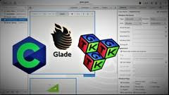

Mon Parcours Académique
Voici mon parcours académique en génie logiciel :
Études universitaires
2020 - 2022 : preparatoir PT a IPEIEM , Tunis, Tunisie.
Projets académiques notables
Durant mes études, j'ai participé à plusieurs projets académiques, dont la conception d'une application web collaborative pour la gestion de projets. Ce projet m'a permis de mettre en pratique mes compétences en développement web et de travailler en équipe.
Stage en entreprise
2021 : Stage de six mois chez ABC Software, spécialisé dans le développement d'applications d'entreprise. J'ai eu l'occasion de contribuer au développement d'un système de gestion des ressources.
